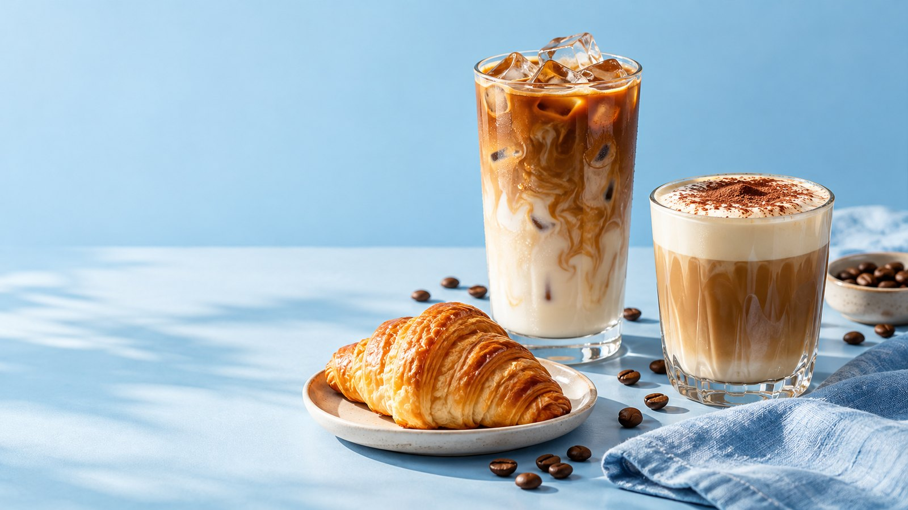
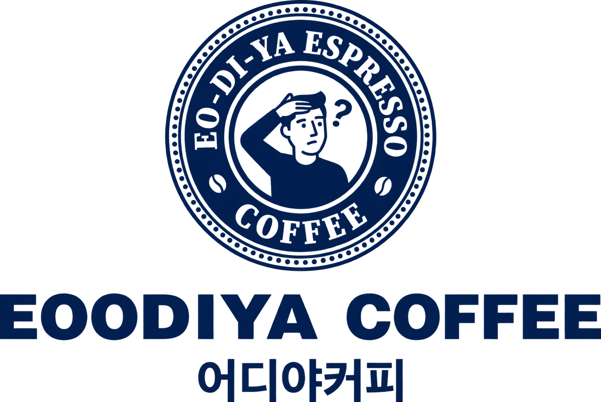

A LITTLE BREAK, A BETTER DAY
EODIYA SIGNATURE COLLECTION
어디야?
커피 한 잔 할래?
바쁜 하루 사이, 잠깐의 여유.
기분 좋은 한 모금을 만나는 곳, 어디야커피.
COFFEE · MOMENTS · EVERYDAY
YOUR EVERYDAY COFFEE COMPANION좋은 커피 한 잔이면, 평범한 하루도 조금 특별해져요.우리의 이야기 ↗

GOOD COFFEE.GOOD COMPANY.
어디서 만나도, 반가운 한 잔.
THE EODIYA WAY
커피를 핑계로,
우리는 조금 더 가까이.
“지금 어디야?”
한마디로 시작되는 우리의 일상.
친구와의 약속, 혼자만의 휴식, 새로운 아이디어가 필요한 오후.
어디야커피는 그 모든 순간에 자연스럽게 어울리는
편안한 커피 브랜드를 꿈꿉니다.
01매일 생각나는 맛부담 없이 즐기는 익숙하고 편안한 한 잔
02나를 위한 작은 쉼표잠시 머물고 싶은 여유로운 시간
03함께 나누는 즐거움커피 한 잔으로 더 가까워지는 일상
BETTER TOGETHER
커피의 가장
다정한 짝꿍.
고소한 라떼와 바삭한 크루아상.
천천히 즐기는 아침을 제안합니다.
LATTE + CROISSANT
WHAT'S BREWING